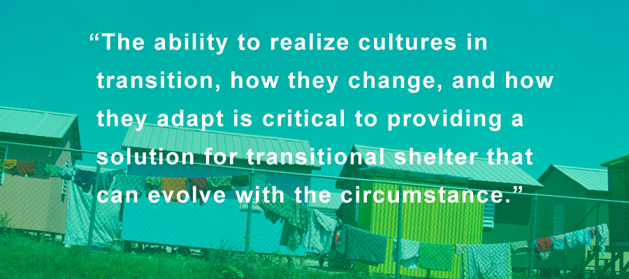
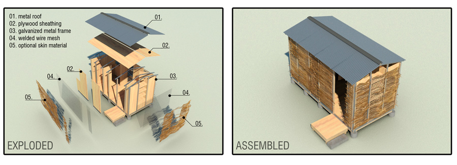
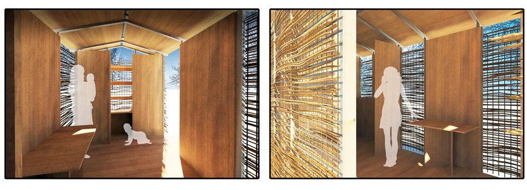
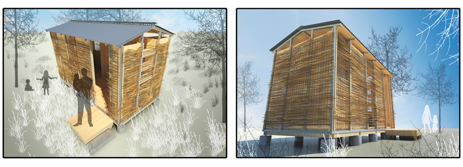
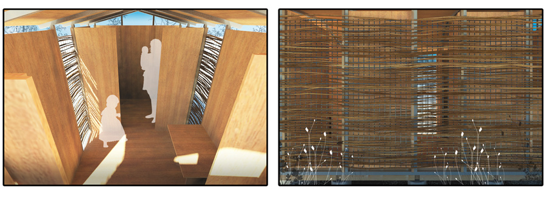
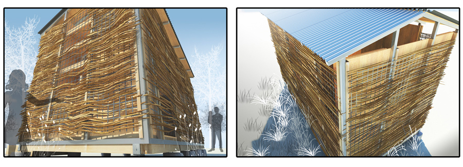

Our design work continued into the summer as we worked to refine our basic concepts that were born from strategies evolving from our research. We wanted to be sure the shelter identified opportunities for safety and security, health and wellness, and work stimulation while still incorporating architectural design motifs promoting sustainable ideals – things like passive cooling and good ventilation.
A few of us ventured to the International Aid Conference in Washington D.C. in early June to check out other shelter concepts and possible equipment provisions that we could utilize. We walked away from the conference having found the basis of our design – a 2” galvanized square tube framing system that had the strength and durability we were looking for to build our product.

We laid out an ideal size for the prototype that we thought would adequately provide sleeping quarters for a family of 3 to 4 individuals at product delivery. The floor is designed as 4 pallets that will be used for shipping the components of the shelter. Some will carry building materials, others will carry aid distribution packages that we hope to provide through future partnerships. At the delivery site, the pallets are set up on a system of piers with cast-in-place steel brackets that allow all 4 pallets to mate up, forming one floor plate.
Blocking at the perimeter of the floor plate serves as a shelf for the metal framing system to rest on. With the floor plate in place, and the metal framing system erected, the design calls for pressure treated lumber to sister onto the vertical members of the metal frame. This provides our nailing surface for the sheathing.

In an effort to simplify the concept, and reduce the amount of materials being used, our wall sheathing is nailed to the interior of the metal framing. This provides a smooth interior wall finish on the interior for painting or staining at the owner’s discretion. A number of hinged components fold into furnishings for the home – a small table for eating, and a shelving unit for storage. Additionally, a number of the panels are hinged to operate like gills – the owner has the ability to control the cross breezes by opening and closing the gills. Two of the panels are hinged for 90 degree stops, where they will form a divider within the space, creating two rooms. This gives the family the possibility of privacy – something we felt was important to the dignity and mental well-being of the stressed population.
The roof then gets put on top. We have added a layer of plywood sheathing to the roof, under the metal roofing, to dampen the sound of falling rain, which tends to be a problem in many of the transitional shelters currently on the market. A ridge vent helps circulate the warm, stale air.

On the exterior of the metal framing a welded wire mesh is attached. This mesh forms the support system for the exterior skin. What we like about this concept is that it offers opportunity to stimulate the workforce… we imagine a market developing for different kinds of materials that can be collected and used as temporary building skins during the transitional phase of rebuilding. Some will collect debris from the disaster, clean it, break it down, and prepare it for weaving through the wire mesh. Others will be able to earn income by becoming weavers. A system of bartering could also develop that provides exchange for goods and services. Any of these options are ideal, and ultimately positive for a population under stress.
The shelter therefore becomes a tool capable of providing stimulation in the form of jobs or work. Our trip to Haiti taught us that flat-packed shelter concepts certainly do provide quick access to shelter, but typically fail to provide other needed provisions – like jobs or steady labor. A shelter erected in 12 hours lacks the sustainable capacity for continued work stimulation – but a shelter that can be assembled quickly, and still have several days worth of effort to complete the exterior skin can offer the population in distress a much-needed service.

An added benefit to this wall system is that the interior sheathing and the exterior skin form an insulating double-wall. The exterior skin works like a traditional rain screen, shielding the interior sheathing from the elements. It also protects the interior wall surface from the effects of the sun. The air space in between the two skins thus has a natural chimney-effect – circulating the heated air up and out before the heat begins to have a thermal impact on the interior surface. This keeps the interior spaces cooler and more comfortable.

As the family grows… as utilities and infrastructure start to get put in place after the disaster… as the community begins to transition from the rebuilding phase to a renewed culture, the shelter can be easily added to, and the skin can be removed and replaced with something more suitable for the culture and place where it is located. Our belief is that families will evolve as their living condition evolves, and the shelter’s ability to recognize change is an added benefit to this proposed solution.

That is why the community design concepts are ultimately as important as the design of the shelter itself – the ability to realize cultures in transition, how they change, and how they adapt is critical to providing a solution for transitional shelter that can evolve with the circumstance. We could have proposed solar panels, but transitional shelters typically have little need for power. A simple battery station for cell phones can be provided. We could easily add a water collection system and filtration tank, but the community layout allows for an accessible clean water tank that can be serviced by water delivery trucks. A small tank for hand and feet washing would do the trick. We used the lessons we learned from post-disaster conditions in Haiti – design within reach with recognition of the services already provided. This makes for a much simpler, and more durable finished product.
Our hope is to construct a prototype this Fall and test these concepts. If the proposed design has marketability, we will begin to look into partnerships in an effort to meet a stated goal at the beginning of this effort – 1 million shelters in 10 years.